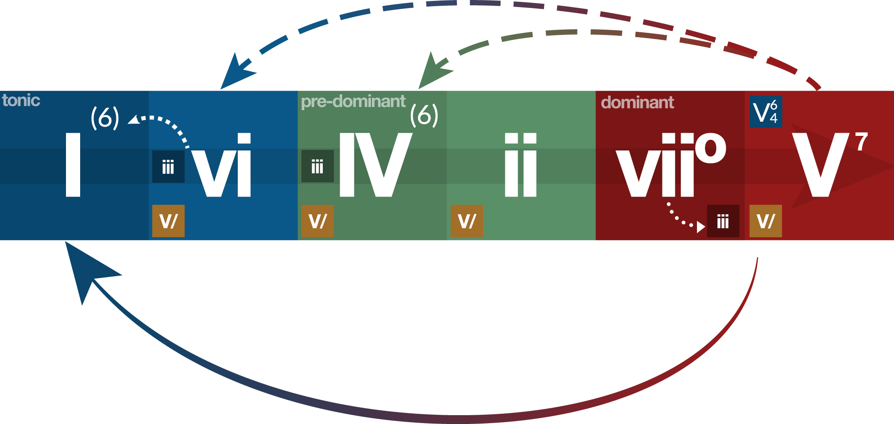

🎵 Simple Composer
Metronome
BPM
+
-
Start
Tap
Key
Base note
C
C#
D
D#
E
F
F#
G
G#
A
A#
B
Mode
Ionian (Major)
Dorian
Phrygian
Lydian
Mixolydian
Aeolian (Natural minor)
Lorcrian
Octave
+
-
Notes of the scale:
Chords
Current chord
Base note
C
C#
D
D#
E
F
F#
G
G#
A
A#
B
Type
Major
Minor
Diminished
Augmented
Inversion
None
First
Second
Add to progression
Play
Chord progression
Pattern
Apply
Play
Save
Clear
Chords will appear here ...
Chord functions
